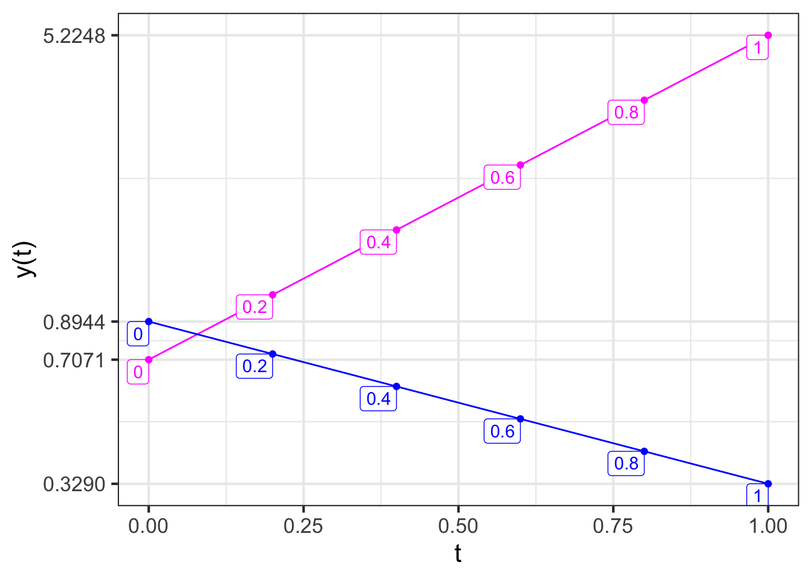

traj <- integrateODE(dx ~ x + y, dy ~ 2*x, x=-1.1, y=2.1, tdur=2)
traj_plot(y(t) ~ x(t), traj)
In the previous chapters, you’ve seen how linear dynamics, when unstable, lead trajectories off to infinity. Section 43 looked at some ways that nonlinearity can tame instability, as in the simple models of linear growth.
In this chapter, we return to linear dynamics to develop a quantitative theory of stability. Such theory is important in many engineering and design applications. For instance, a building exposed to earthquake risk can be economically designed to be strong specifically against the type of shaking produced by earthquakes. An electronic circuit can be designed to be sensitive to certain kinds of communication signals while still resisting noise or jamming.
Cruise control is a feature of many modern automobiles. It enables a driver to set a desired speed for the car to follow automatically, thus reducing cognitive load on the driver. Early models of cruise control introduced in the 1970s (and still common in 2020) had an extremely simple logic. The speedometer constantly monitors the car’s speed \(v\). The driver sets a desired speed, which we’ll call \(v_0\). The cruise control actuator—the mechanism that works to maintain the speed at \(v_0\) by, let’s say, adjusting the throttle to increase or reduce speed as appropriate—is designed to produce a throttle input proportional to the deviation in actual speed \(v\) from the set speed \(v_0\). \[\text{throttle-input} = -a (v - v_0)\ .\] You can see that when \(v = v_0\), the throttle input from the system is zero. When \(v_0 < v\), as when starting to go downhill, the throttle input will be negative, reducing the speed.
A simple model is that the throttle input is proportional to \(\partial_t\, v\): positive input increases speed, negative input decreases speed. The overall system is then described by a linear, first-order differential equation \[\partial_t\,v = -a(v-v_0)\ .\] This equation has a fixed point at \(v = v_0\) (as desired). To describe more simply the dynamics around the fixed point, we can define a new dynamical state \(y=v - v_0\). Differentiating both sides with respect to time gives \(\partial_t y = \partial_t v\), so we can re-write the original differential equation as \[\partial_t y = -a y\] which has a solution \(y(t) = A e^{-at}\) as we’ve seen before. For any positive coefficient \(a\), the control system is stable: a deviation from \(v_0\) will be followed by exponential decay back to \(v_0\).
A modern cruise control system adds an important feature: the car slows down automatically if it gets too close to the car in front. Let’s call the distance to the leading car \(x\) and define “too close” to mean closer than distance \(x_0\). The car is travelling at velocity \(v\) and the car in front at \(v_f\). If \(v_f < v\), the distance between the cars gets smaller: \(\partial_t x = -(v - v_f)\). On the other hand, if \(x_0 < x\), the car is far enough away that the velocity can be increased: \(\partial_t v = b(x - x_0)\). We can unite these two first-order differential equations into a single, second-order equation: \[\partial_t x = -(v - v_f) \ \ \implies\ \ \partial_{tt} x = - \partial_t v = - b(x-x_0)\] To solve this system, define \(y \equiv x - x_0\). This implies \(\partial_{tt} y = \partial_{tt} x\), so the equation describing the control system becomes \[\partial_{tt} y = - b y\ .\] The solution to this is \(y(t) = A \sin\left(\sqrt{b} \ t\right)\) as you can confirm by substitution.
Result: The simple car-following control system oscillates. That’s not a very good experience for the driver! By constructing a theory of stability, we may be able to figure out a re-design that will cause the oscillations to go away.
The form in which we have been writing linear differential equations in two state variables is \[\partial_t x = a x + b y\\ \partial_t y = c x + d y\]
A key part of constructing a theory of stability is finding a set of mathematical ideas that enable us to view dynamics in a simpler way. The idea we will introduce here is thinking about the state and trajectory of a differential equation in terms of vectors. We’ll work here with systems with a two-variable dynamical state, but the results apply just as well to higher dimensional states. That’s important in applied work, where the systems being modeled are complicated with many state components.
We can re-write the linear differential equation using vector and matrix notation. Suppose that we collect the \(x\) and \(y\) components of the state into a vector, \[\vec{w(t)} =\left[\begin{array}{c}x(t)\\y(t)\end{array}\right]\ .\] The differential equation, in terms of \(\vec{w(t)}\) is \[\partial_t \vec{w(t)} = \left[\begin{array}{cc}a&b\\c&d\end{array}\right] \vec{w(t)}\ .\] Now imagine that we pick two non-colinear vectors, \(\vec{u_1}\) and \(\vec{u_2}\) that span the state space. Since the vectors are assumed to span the state, any initial condition can be written as a linear combination of those two vectors: \[\vec{w(0)} =\left[\begin{array}{c}x(0)\\y(0)\end{array}\right] = m_1 \vec{u_1} + m_2 \vec{u_2}\ .\]
For the moment, we won’t worry about how best to choose \(\vec{u_1}\) and \(\vec{u_2}\); any two vectors that are not colinear will do.
\(\ \)
As a running example, we’ll work with the pair of first-order differential equations \[\partial_t x = x + y\\ \partial_t y = 2 x \ \ \ \ \] which, in vector/matrix form are \[\partial_t \vec{w(t)} = \left[\begin{array}{cc}1&1\\2&0\end{array}\right] \vec{w(t)}\ .\] Imagine that we choose, arbitrarily, \[\vec{u_1} = \color{magenta}{\left[\begin{array}{r}1\\-3\end{array}\right]}\ \ \ \text{and}\ \ \ \vec{u_2} = \color{blue}{\left[\begin{array}{r}1.0\\0\end{array}\right]}\ .\]
For the example, we’ll calculate a trajectory starting at the initial condition \(\vec{w(0)} = \left[\begin{array}{r}-1.1\\ 2.1\end{array}\right]\):
traj <- integrateODE(dx ~ x + y, dy ~ 2*x, x=-1.1, y=2.1, tdur=2)
traj_plot(y(t) ~ x(t), traj)

The initial condition (marked “0” in ?fig-vec-example-1) is, like any other point in the state space, a linear combination of \(\vec{u_1}\) and \(\vec{u_2}\). We can find the scalar coefficients of the linear combination using any of the methods presented in Block 5, for instance the telescope method. We’ll illustrate with qr.solve(): ::: {.cell layout-align=“center” fig.showtext=‘false’}
M <- cbind(rbind(1,-3), rbind(1,0))
w0 <- rbind(-1.1, 2.1)
qr.solve(M, w0)
## [,1]
## [1,] -0.7
## [2,] -0.4So, \(\vec{w(0)} = -0.7 \vec{u_1} - 0.4 \vec{u_2}\). Keep these scalar coefficients, \(-0.7\) and \(-0.4\) in mind for the next example. :::
We can use integrateODE() to find the solution starting at any initial condition. In particular, we can find the solution \(\vec{u_1}\) as the initial condition and, similarly, using \(\vec{u_2}\) as the initial condition.
traj_u1 <- integrateODE(dx ~ x + y, dy ~ 2*x, x=1, y=-3, tdur=2)
traj_u2 <- integrateODE(dx ~ x + y, dy ~ 2*x, x=1, y= 0, tdur=2)?fig-vec-example-2 shows these trajectories.

At first glance, the two trajectories \(\vec{u_1(t)}\) and \(\vec{u_2(t)}\) in ?fig-vec-example2 that start from \(\vec{u_1}\) and \(\vec{u_2}\) might not look much like the trajectory in ?fig-vec-example-1 that starts from \(\vec{w(0)} = -0.7 \vec{u_1} - 0.4 \vec{u_2}\). But in fact there is a very simple relationship between the trajectories: \[\vec{w(t)} = -0.7 \vec{u_1(t)} - 0.4 \vec{u_2(t)}\ .\] To state the situation more generally, any solution to the differential equations can be written as a linear combination of the solutions starting at \(\vec{u_1}\) and \(\vec{u_2}\), regardless of how \(\vec{u_1}\) and \(\vec{u_2}\) were chosen.
We can see this algebraically. Since \(\vec{u_1(t)}\) and \(\vec{u_2(t)}\) are solutions to the linear differential equation, it must be that \[\partial_t \vec{u_1(t)} = \left[\begin{array}{cc}1&1\\2&0\end{array}\right] \vec{u_1(t)}\ \ \text{and}\ \ \partial_t \vec{u_2(t)} = \left[\begin{array}{cc}1&1\\2&0\end{array}\right] \vec{u_2(t)}\ .\] Taking a linear combination of these equations gives
\[\partial_t \left[m_1\, \vec{u_1(t)} + m_2 \vec{u_2(t)}\right] = \left[\begin{array}{cc}1&1\\2&0\end{array}\right] \left[m_1\, \vec{u_1(t)} + m_2 \vec{u_2(t)}\right]\] The same will be true in general, that is, for the matrix \(\left[\begin{array}{cc}a&b\\c&d\end{array}\right]\).
In the previous section, we saw that the solution to any linear differential equation starting at any initial condition can be written as a linear combination \(m_1 \vec{u_1(t)} + m_2 \vec{u_2(t)}\), where \(\vec{u_1(t)}\) is the solution starting at an initial condition \(\vec{u_1}\) and \(\vec{u_2(t)}\) is the solution starting at \(\vec{u_2}\). It does not matter how \(\vec{u_1}\) and \(\vec{u_2}\) are chosen, so long as they are not colinear, that is, so long as they span the state space.
In this section, we’ll demonstrate that there is a particular way of selecting \(\vec{u_1}\) and \(\vec{u_2}\) that makes the solutions \(\vec{u_1(t)}\) and \(\vec{u_2(t)}\) have a very simple, purely exponential format. The vectors to be chosen are the eigenvectors of the matrix \(\left[\begin{array}{cc}a&b\\c&d\end{array}\right]\). We’ll call these eigenvectors \(\vec{\Lambda_1}\) and \(\vec{\Lambda_2}\). (This use of the Greek letter \(\Lambda\) (capital “lambda”) and it’s lower-case version \(\lambda\), is conventional in mathematics, physics, and engineering. So it’s worth learning to identify the letters.)
Our task in this section is to show how to compute the eigenvectors \(\vec{\Lambda_1}\) and \(\vec{\Lambda_2}\) and that the solutions \(\vec{\Lambda_1(t)}\) and \(\vec{\Lambda_2(t)}\) are in fact simple exponentials. In Section 46 we’ll derive the formula for the eigenvectors. Here, we’ll use the R function eigen() to do the calculations for us.
\(\ \) Eigenvectors can be calculated using the R function eigen() applied to the abcd matrix that defines the linear differential equation.
For the system of first-order differential equations \[\partial_t x = x + y\\\partial_t y = 2x\ \ \ \ \ \] the matrix is, as we’ve seen, \[\left[\begin{array}{cc}1&1\\2&0\end{array}\right]\ .\]
Carrying out the eigenvector calculation is straightforward:
M <- cbind(rbind(1,2), rbind(1,0))
eigen(M)
## eigen() decomposition
## $values
## [1] 2 -1
##
## $vectors
## [,1] [,2]
## [1,] 0.7071068 -0.4472136
## [2,] 0.7071068 0.8944272The eigenvectors are the two columns of the matrix labeled vectors returned by the calculation. Here, that’s \[\vec{\Lambda_1} = \left[\begin{array}{r}0.7071\\0.7071\end{array}\right]
\ \ \ \text{and}\ \ \ \
\vec{\Lambda_2} = \left[\begin{array}{r}-0.4472\\0.8944\end{array}\right]\ .\]
The calculation also produces eigenvalues. Here that’s \(\lambda_1 = 2\) and \(\lambda_2 = -1\).
We can see what’s special about \(\vec{\Lambda_1}\) and \(\vec{\Lambda_2}\) by plotting them along with the flow field, as in Figure 45.1.

The eigenvectors mark the directions where the flow is either directly toward the fixed point or directly away from it. Here, the flow on the subspace of \(\color{magenta}{\vec{\Lambda_1}}\) is away from the fixed point, while the flow along the subspace of \(\color{blue}{\vec{\Lambda_2}}\) is inward to the fixed point.
The consequence of this alignment of the flow with the eigenvectors is that the trajectory from any initial condition \(m_1 \vec{\Lambda_1}\) will have the form \(m_1(t) \vec{\Lambda_1}\) and similarly for an initial condition \(m_2(t) \vec{\Lambda_2}\).
As we did in the previous section, let’s calculate the trajectories \(\color{magenta}{\vec{\Lambda_1(t)}}\) and \(\color{blue}{\vec{\Lambda_2(t)}}\) starting at the two eigenvectors and plot out the \(y(t)\) component of the solution. Since we’re anticipating an exponential form for the function, we’ll use semi-log axes, where an exponential will look like a straight line.
traj_eigen1 <- integrateODE(dx ~ x + y, dy ~ 2*x, x=0.7071, y=0.7071)
traj_eigen2 <- integrateODE(dx ~ x + y, dy ~ 2*x, x=-0.4472, y=0.8944)
traj_plot(y(t) ~ t, traj_eigen1, color="magenta") %>%
traj_plot(y(t) ~ t, traj_eigen2, color="blue") %>%
gf_refine(scale_y_log10(breaks=c(0.3290, 0.7071, 0.8944, 5.2248)))
We’ve marked the \(y\) axis with the starting and ending values of each function, so that you can find the exponential parameter \(k\) for each function.
\[\color{magenta}{y_1(t) = 0.7071 e^{k_1 t}}\\ \color{blue}{y_2(t)} = 0.8944 e^{k_2 t}\] To find \(k_1\) and \(k_2\), plug in \(t=1\) to the solution:
\[\color{magenta}{y_1(1) = 5.2248 = 0.7071 e^{k_1}} \implies k_1=2\\ \color{blue}{y_2(1) = 0.3290 = 0.8944 e^{k_2}} \implies k_2 = -1\]
Look back at the results from the eigen(M) calculation. These values for \(k_1\) and \(k_2\) are exactly the eigenvalues that were computed from the matrix M. In standard notation, rather than \(k_1\) and \(k_2\), the notation \(\lambda_1 = k_1\) and \(\lambda_2 = k_2\) is preferred. (Remember, \(\lambda\) is the Greek letter “lambda” in it’s lower-case form.) Every solution to the differential equation has the form \[m_1\, e^{\lambda_1 t} \vec{\Lambda_1} + m_2\, e^{\lambda_2 t} \vec{\Lambda_2}\ .\] The scalar coefficients \(m_1\) and \(m_2\) can be found from the initial condition. The stability of the system depends only on \(\lambda_1\) and \(\lambda_2\). If either one of these is positive, then the system is unstable.
WP-103-16: Using eigenvalues, eigenvectors, and vector decomposition, develop closed form solutions to initial value problems involving systems of linear equations.
D-BRUPM: Calculate the eigenvalues of a 2x2 numerical matrix by hand, and larger matrices by computer.
WP-103-14: Explain the graphical/geometrical interpretation of an eigenvector and eigenvalue and how to compute each for a two-by-two matrix.